각막·수정체·망막·난시·동공
크기 확인
아이리움 노안·백내장 렌즈
-
정밀검사 기반 렌즈 선택
-
안전성을 확인한 정품렌즈 사용
-

단초점·다초점·연속초점 다양한 렌즈
-
생활 거리별 시야 고려
백내장 수술에서 인공수정체는
‘새로운 수정체’ 역할을 합니다.
백내장 수술은 혼탁해진 수정체를 제거하고 그 자리에 인공수정체를 삽입하는 수술입니다.
이때 어떤 렌즈를 선택하느냐에 따라 수술 후 주로 편한 거리, 안경 의존도, 야간 시야 만족도등이 달라질 수 있습니다.
아이리움은 렌즈를 먼저 정하지 않습니다.
눈 상태와 생활을 먼저 확인합니다.
-
Step
정밀검사
-
Step
생활거리 확인
운전·독서·스마트폰·컴퓨터
사용량 확인 -
Step
안질환 여부 확인
망막질환·녹내장·각막
불규칙성 확인 -
Step
렌즈 적합성 상담
단초점·다초점·연속초점
적합성 상담 -
Step
수술 후 주의사항
안경 의존도·빛 번짐·적응
기간 설명
생활패턴 별
렌즈 선택 기준
렌즈이름보다먼저, 눈상태와 생활패턴을 확인해보세요
-
스마트폰·책을
많이 보나요?근거리 시야와 돋보기 의존도 감소 가능성을 확인합니다. -
야간 운전을
자주 하나요?야간 빛 번짐, 대비감도, 원거리 시야를함께 고려합니다. -
컴퓨터·모니터 작업이
많나요?중간거리 시야가 중요한 생활 패턴입니다. -
기존 난시가
있나요?난시교정여부에 따라 렌즈를 선택합니다.
단초점 vs 다초점 비교
아이리움안과는 단초점인공수정체부터 백내장치료 시 노안까지 함께 개선하는
다초점· 연속초점 인공수정체까지 다양한 렌즈 선택지를 갖추고 있습니다. 각 렌즈는 제조사,
광학 설계, 주로 고려하는 시야 범위가 다르므로 정밀검사와 의료진 상담 후 선택합니다.
초첨별 비교
-
인공수정체(렌즈) 종류초점장점고려점추천 상담 대상
-
단초점한 거리 중심한 거리의 선명도에 집중가까운 거리는 돋보기가 필요할 수 있음원거리 중심 생활, 야간운전 비중 높은 분
-
다초점/연속초점원거리·중간거리·근거리 일부를 함께 고려안경 의존도를 낮추는 방향으로 설계빛 번짐, 적응 기간, 눈 상태에 따라 적합성 확인 필요안경 의존도를 줄이고 다양한 거리 사용이 필요한 분
- 모든 인공수정체가 모든 환자에게 적합한 것은 아니며, 망막·각막·난시·동공 크기 등 정밀검사 결과에 따라 선택이 달라질 수 있습니다.
-
근거리
- 책
- 스마트폰
- 작은 글씨
-
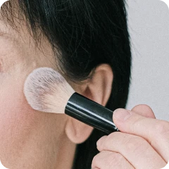
화장
-
중간거리
- 컴퓨터
-
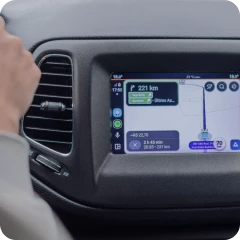
운전네비게이션
-
원거리
-
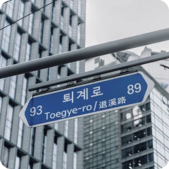
도로 이정표 -
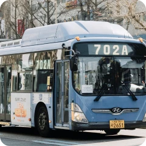
버스번호 -
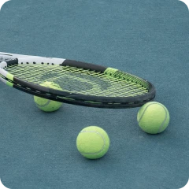
야외활동
-
아이리움안과의
다양한 인공수정체
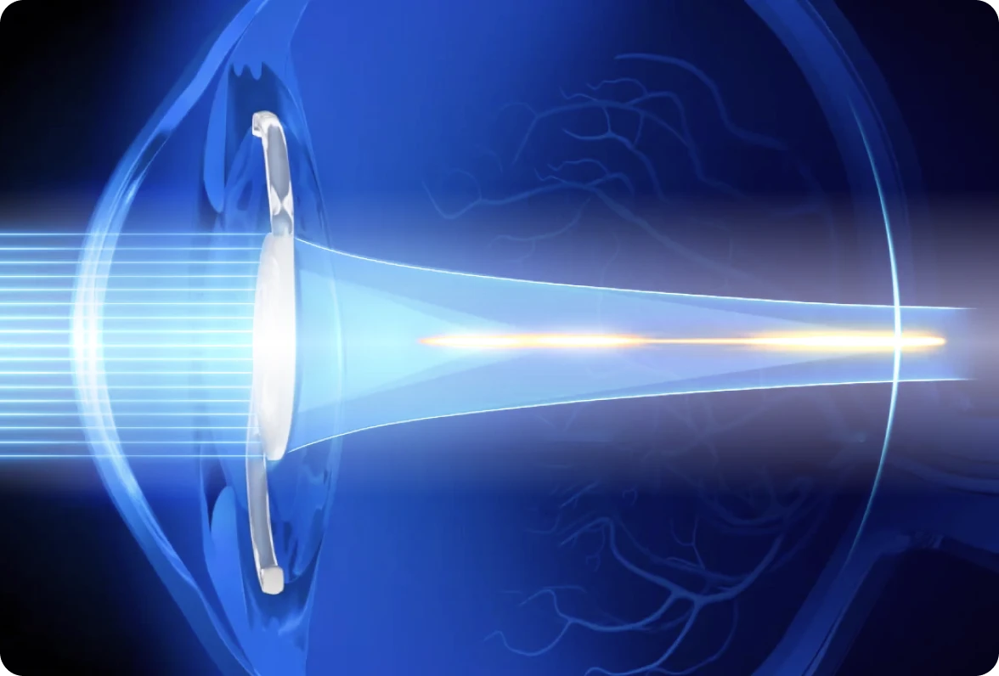
클라레온 팬옵틱스 프로,
백내장 다초점렌즈 첫 수술
백내장 다초점렌즈 첫 수술
94% 빛을 더 온전히 일상을 선명하게
아이리움안과가 알콘의 최신 다초점 인공수정체 '클라레온 팬옵틱스 프로(Clareon PanOptix Pro)'를 적용한 노안·백내장 수술을 2026년 4월 처음
시작했습니다.
기존 팬옵틱스 렌즈의 강점을 바탕으로 빛 활용률 94% 감소된 산란광을 특징으로, 중간거리 시력과 야간 시야를 고려한 다초점렌즈로 보다 편안한 시야를 기대할 수 있습니다.
기존 팬옵틱스 렌즈의 강점을 바탕으로 빛 활용률 94% 감소된 산란광을 특징으로, 중간거리 시력과 야간 시야를 고려한 다초점렌즈로 보다 편안한 시야를 기대할 수 있습니다.
- 다초점·연속초첨 인공수정체
- 단초점 인공수정체
-
Alcon
클라레온팬옵틱스 프로
 빛 활용과 연속 시야를 고려한 최신 다초점렌즈
빛 활용과 연속 시야를 고려한 최신 다초점렌즈기존 PanOptix에서 산란되던 12%의 빛 중 절반을 회수해 재배치함으로써 무려 94%의 빛을 환자의 시야를 위해 사용. ENLIGHTEN® NXT 기술로 원·중·근거리까지 끊김 없는 '연속 시야' 제공. 중간거리와 원거리 사이에서 약 16% 대비 향상으로 더 선명하고 또렷하게 보임
-
Johnson&Johnson
오디세이
 거리 전환의 자연스러움을 고려한 렌즈
거리 전환의 자연스러움을 고려한 렌즈원거리부터 중간, 근거리까지 끊김 없는 시야를 제공하도록 설계한 최신 렌즈. 자유형 회절 구조로 거리 전환 시 부드럽고 자연스러운 시각을 구현. 대비감도 및 야간 시력과 선명도를 향상함
-
Johnson&Johnson
퓨어씨
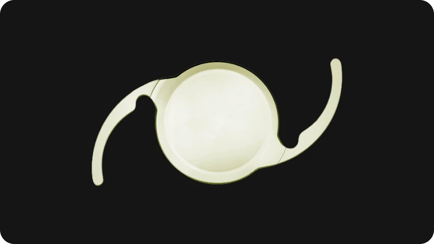
단초점과 다초점의 장점을 함께 고려한 렌즈단초점 인공수정체와 다초점 인공수정체의 장 점을 두루 갖춤. 회절고리가 없고 굴절(refractive)링만 있는 굴절형 다초점 인공수정체, 서로 다른 초점거리를 통해 원거리, 근거리를 모두 명확하게 볼 수 있도록 설계
-
Alcon
클라레온 팬옵틱스
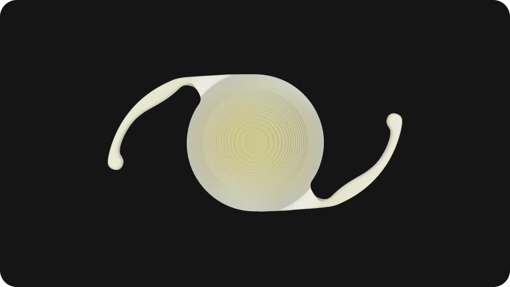
최초로 연속초점 원리를 적용한 인공수정체로 40~80cm까지 연속적인 시야 확보로 최적의 중간거리를 제공. 정밀한 렌즈설계로 빛 번짐을 감소시키고 수술 안정성을 높임
-
Alcon
팬옵틱스
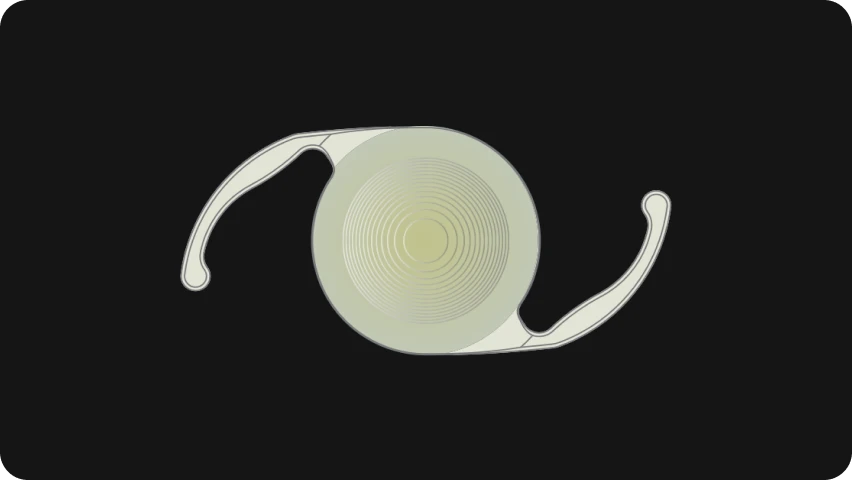
백내장 노안치료에 처음으로 4중 초점 원리를 적용한 인공수정체. 기존 3중 초점 인공수정 체와 달리 40~80cm까지 연속적인 시야를 확보
-
Carl Zeiss
리사트리
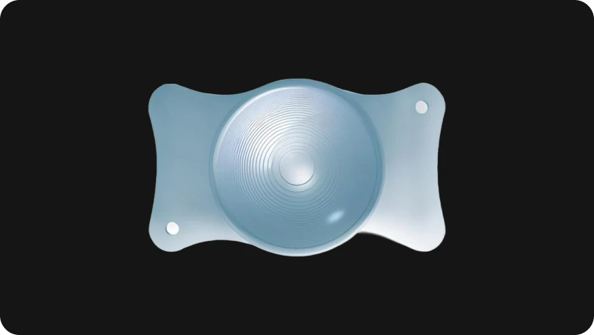
회절형 디자인 기반의 3중 초점 렌즈 구조로 근거리, 원거리, 중간거리 시력개선에 도움
-
Carl Zeiss
라라
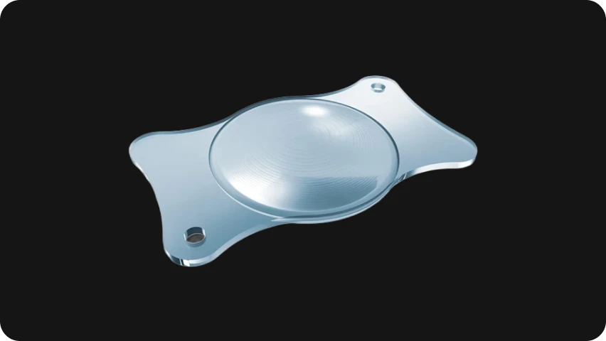
중간거리에서 먼 거리까지 초점을 확보하여 우수한 시력을 제공. 연속초점과 SMP기술을 이용하여 부작용을 더욱 개선
-
Alcon
비비티
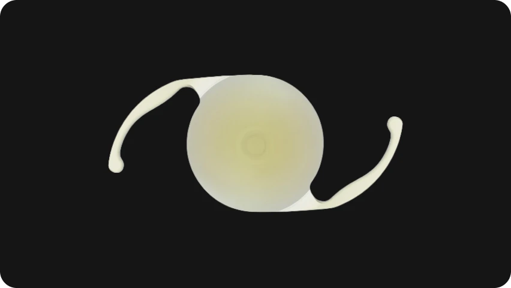
Monofocal-like visual disturbance profile 과 함께, 중간 및 가까운 시력을 개선 목적, 기존 다초점 렌즈 대비 눈부심, 후광 발생을 낮음
-
Johnson&Johnson
테크니스 멀티포컬
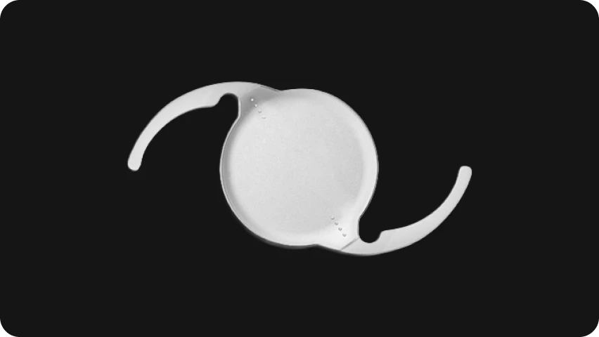
렌즈 앞 표면 비구면 처리가 되어있어 시력의 질을 높이고, 렌즈 후면은 회절 처리가 되어 원, 근거리 초점을 동시에 맞춰 교정 효과가 우수함. 광학부 전체에 회절 처리가 되어있음
-
Johnson&Johnson
시너지

연속초정과 다초점 인공수정체의 장점을 결합한 렌즈로, 가까운 거리부터 먼 거리까지 시야를 울기면서 모니터 거리와 같은 중간거리에서 흐린 부분이 발생한 것을 보완하며, 포괄적인 거리에서 시력을 보완함
-
HOYA
지메트릭
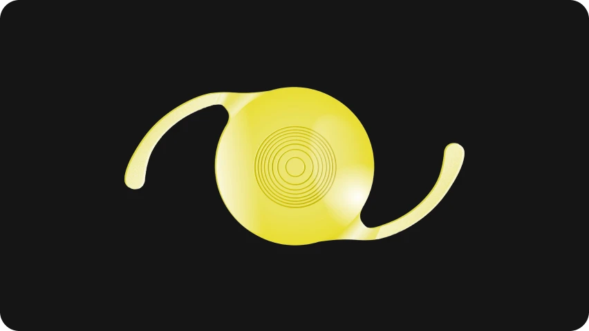
Vivinex™ 하이드로포빅 아크릴 소재를 사용 하여 생체 적합성이 높고 눈안에서 안전하고 안정적으로 유지됨. 3.2mm 범위 내에서 이루어지는 회절과 Gaussian Smoothing Technology를 적용해 빛의 산란을 최소화하고 효율을 극대화함으로써 근거리, 중간거리, 원거리 모두에서 선명한 시력을 제공
-
HANITA
인텐시티
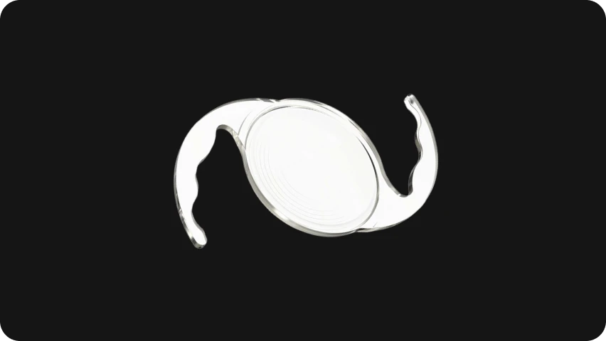
렌즈 앞 표면 비구면 처리가 되어있어 시력의 질을 5중 초점을 중간거리(80cm) 기준으로 대칭 분포시킨 12개의 부드러운 회절링 적용해 모든 거리에서 선명한 시야를 제공. DLU(동적 조명활용)기술을 통해 원거리와 중간거리 사이인 133cm, 중간거리와 근거리 사이의 60cm의 선명도를 증가, 연속적인 시야를 가능, 최대의 빛 효율성 (93.5%)으로 선명한 시력을 제공
-
Carl Zeiss
엘라나
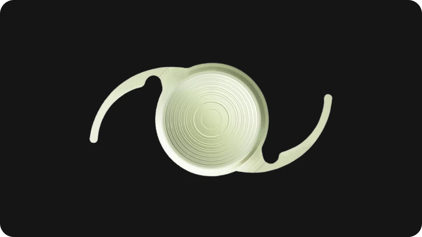
3중 초점 기능. C-loop 형태로 제작되어 기존의 4-haptic plate 디자인보다 안정적인 삽입이 가능함. 소수성 재질로 후발성 백내장 발생 위험이 낮고, 빛 반사율이 낮아 자연스러운 색감과 선명함을 제공
-
Alcon
클라레온 모노
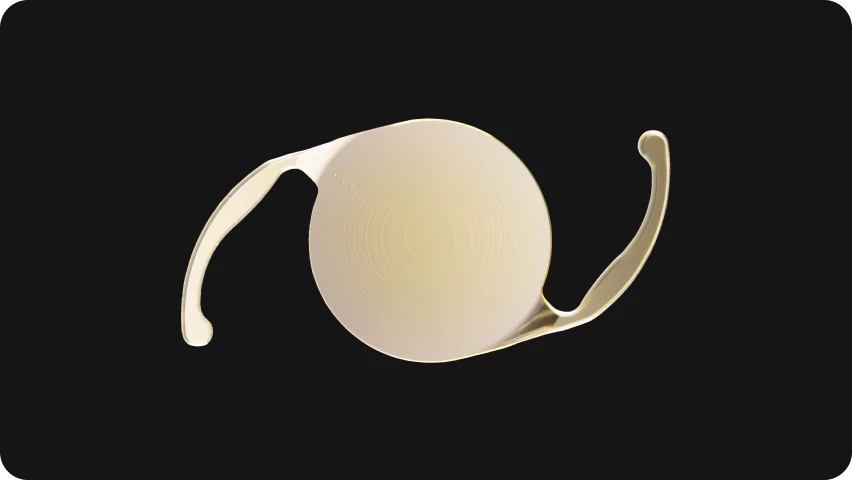
원거리 중심 시야를 고려하는 단초점 렌즈엣지(Edge)디자인으로 야간 빛 번짐 개선, 비구면설계와 청색광 필터링 기술로 야간 시력 향상, 아크리소프(AcrySof) 기술력을 기반으로 개발되어 렌즈 표면이 매끄럽고 재질의 장기적 안정성이 강화
-
Johnson&Johnson
테크니스 모노
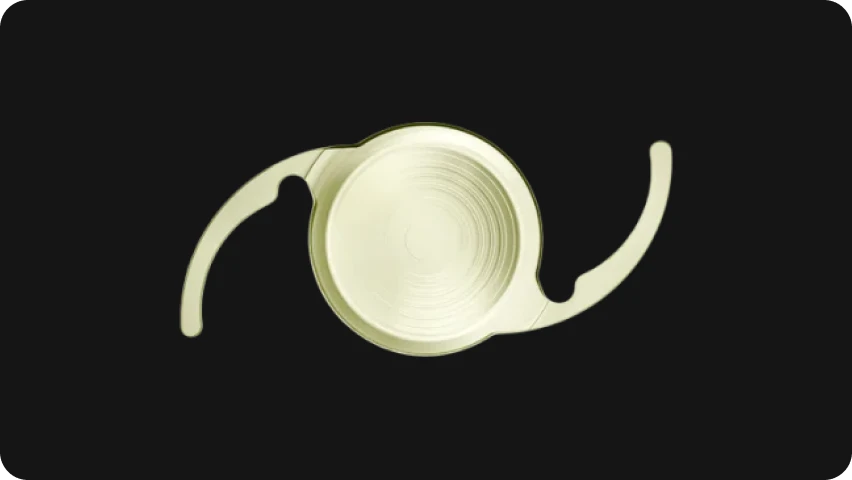
선명한 원거리 시야를 고려하는 단초점렌즈생체 적합성이 우수한 히드로포빅 소재로 면수차를 보정해 야간 시력 개선, 선명한 원거 리 시력 제공
-
Johnson&Johnson
아이핸스
 원거리 중심에 중간거리까지 고려한 렌즈
원거리 중심에 중간거리까지 고려한 렌즈원거리부터 중간, 근거리까지 끊임 없는 시야를 제공하도록 설계한 최신 렌즈. 자유형 회절 구조로 거리 전환 시 부드럽고 자연스러운 시각을 구현. 대비감도 및 야간 시력과 선명도를 향상함
- 렌즈 선택은 정밀검사 후 의료진 진료를 통해 결정되며, 개인의 눈 상태에 따라 적합성이 달라질 수 있습니다.
아이리움안과는
안전성을 확인한 정품렌즈만 사용합니다.
노안백내장 수술에 사용하는 인공수정체는 눈 안에 삽입되는 의료기기입니다. 아이리움안과는 안전성을 확인한
정품렌즈를 사용하며, 정밀검사와 의료진 상담을 통해 환자에게 적합한 렌즈를 안내합니다.
-
정품렌즈
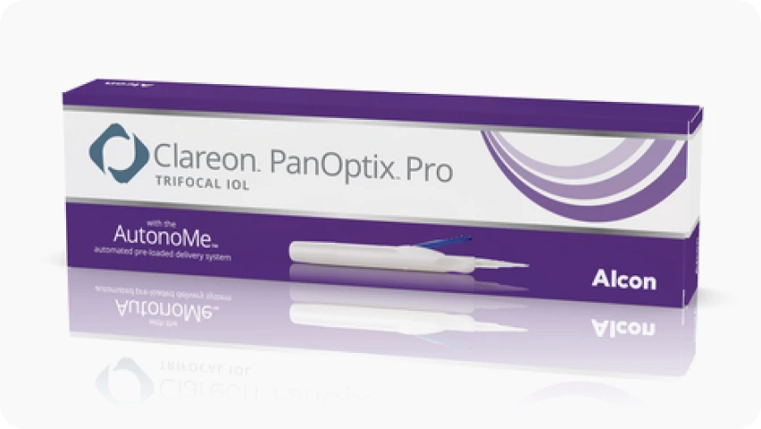
안전성을 확인한 렌즈 사용 -
정밀검사
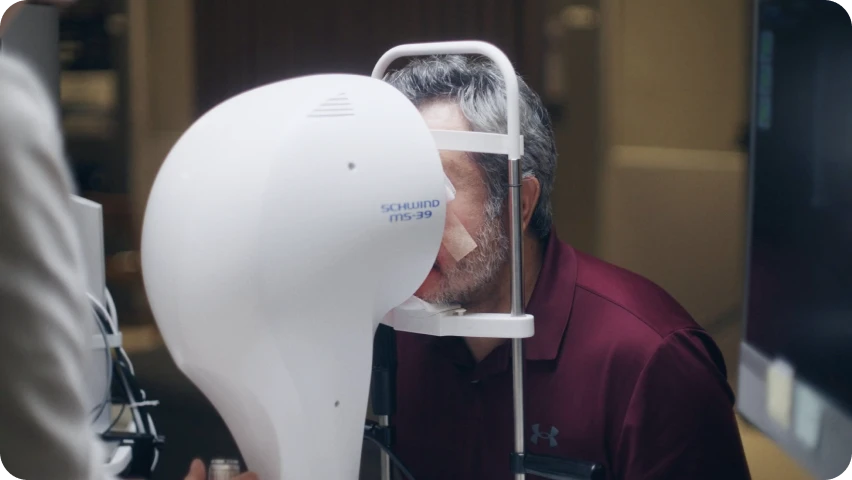
눈 상태에 맞는 적합성 확인 -
의료진 상담
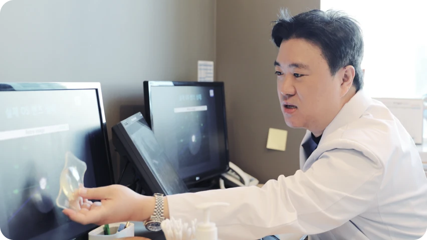
기대 시야와 한계 설명
-
노안백내장 렌즈 비용 안내 단안수술
수술 비용은 선택하는 인공수정체 종류, 눈 상태, 수술 방법에 따라 달라질 수 있습니다. 정확한 비용은 정밀검사와 의료진 상담 후 안내됩니다.
단안 수술 2026년 6월 기준- 단초점 렌즈 : 25만원부터 프리미엄
- 다초점 렌즈 : 100만원대 후반부터
-
프리미엄렌즈
사은행사가 (단안 / 레이저 수술 기준)
-
아이핸스145만원
-
클라레온 팬옵틱스195만원
-
퓨어씨195만원
-
지메트릭225만원
-
엘라나240만원
-
오디세이310만원
-
클라레온 팬옵틱스 프로425만원
* 상기 비용은 기준 비용이며, 환자의 눈 상태와 선택 렌즈, 수술 방법에 따라 달라질 수 있습니다. 의료진 진료 후 최종 수술 방법과 비용이 안내됩니다.
노안·백내장 렌즈 종류 FAQ
노안·백내장 렌즈 종류에 대해 가장 많이 묻는 질문
-
Q
노안백내장 렌즈는 어떤 기준으로 선택하나요?
-
Q
수술하는 안과에 렌즈 종류가 많으면 어떤 점이 좋은가요?
-
Q
가장 최신 렌즈나 가장 비싼 렌즈가 가장 좋은 렌즈인가요?
-
Q
단초점 렌즈와 노안교정용 렌즈는 무엇이 다른가요?
-
Q
다초점 렌즈를 넣으면 안경이 전혀 필요 없나요?
-
Q
야간 운전을 자주 하는 경우 어떤 렌즈를 고려해야 하나요?
-
Q
과거 라식·라섹을 했어도 노안백내장 렌즈를 선택할 수 있나요?